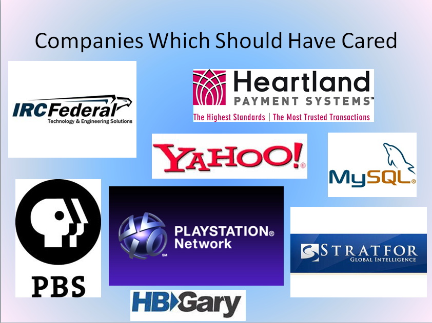

Understanding and Eliminating
SQL Injection
Kevin Feasel (@feaselkl)http://CSmore.info/on/sqli
Who Am I? What Am I Doing Here?


What Is An Injection Attack?
An injection attack is when you insert code in a manner the application developers did not expect.
Example: your text box populates @Parameter to do a lookup on a table. An attacker overloads @Parameter to perform some unexpected operation.
Another way of thinking about injection attacks: getting "outside" the parameter.
What Is An Injection Attack?
SQL injection is not the only injection attack available.
- Javascript (e.g., cross-site scripting)
- LDAP
- NoSQL databases (e.g., MongoDB)
Why Should I Care?
- By 2006, web application vulnerabilities had become more popular than buffer overflows.
- SQL injection (and injection attacks in general) are #1 on the OWASP top 10 list.
- 2011 Imperva study: 83% of successful data breaches involve SQL injection
Why Should I Care?

What Can An Attacker Do?
- Get schema information
- Get protected data
- Perform "administrative" tasks
- Create bogus user accounts (including administrative accounts)
- Create, drop, or alter tables or views
- Delete, update, or insert data
- Run arbitrary executable code
What SQL Injection Vulnerability Tells Me
Because of how easy it is to stop SQL injection, your application being susceptible indicates that you may have bigger problems, like:
- Using administrative accounts instead of least-privilege accounts
- Not protecting against other web application attacks (e.g., cross-site scripting, cross-site request forgery, or iframe injection)
- Not having measures in place to protect against data loss
- Not taking appropriate care of sensitive data (e.g., not hashing passwords properly, storing card data in violation of PCI standards)
Demo Time
Wrapping Up
There is one and only one way to protect yourself against SQL injection: parameterize your queries.
To learn how to do this for non-ASP.Net solutions, go to http://bobby-tables.com.
Wrapping Up
To learn more, go here:
https://CSmore.info/on/sqli
And for help, contact me:
feasel@catallaxyservices.com | @feaselkl
Catallaxy Services consulting:
https://CSmore.info/on/contact